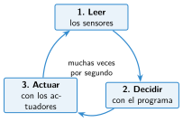

Controladores: Micro:Bit, Arduino y la placa del mBot
🤔 Pienso5 min
Qué hago aquí: Piensa un momento y contesta con lo que ya sabes. No pasa nada si no lo sabes: es para empezar.
Mira una Micro:Bit o su foto. Señala dónde crees que se conectan los cables. ¿Dónde está el «cerebro»?
✏️ Puedes responder escribiendo, con un dibujo o un esquema, o contándolo en voz alta.
📖 Leo y aprendo15 min
Qué hago aquí: Lee despacio, mira los dibujos y los ejemplos, y quédate con la idea clave del final.
El controlador es una placa con un microcontrolador que sigue el programa. Los sensores y actuadores se conectan a sus pines.

En MakeCode, este ciclo es el bloque para siempre.

| Micro:Bit | Arduino | mBot | |
|---|---|---|---|
| Se programa con | MakeCode | Arduino IDE o bloques | mBlock |
| Trae sensores | luz, temperatura, botones, acelerómetro | no | luz, botón |
| Trae actuadores | 25 LED, altavoz | un LED | 2 LED, zumbador, 2 motores |
| Lo mejor | Fácil para empezar | Muchos sensores | Ya es un robot |
✏️ Hago25 min
Qué hago aquí: Haz las actividades en orden. Empieza siempre por las básicas.
Ordena el ciclo del controlador: decidir, actuar, leer.
Escribe dos sensores y dos actuadores que ya trae la Micro:Bit.
¿Con qué programa se programa cada placa? Micro:Bit, Arduino, mBot.
¿Qué placa eliges para un robot que tiene que funcionar hoy mismo, sin montar nada?
¿Qué placa eliges para medir la temperatura del aula? Da una razón.
🚀 Amplío (si quieres saber más)
Qué hago aquí: ¿Has terminado? Lee la curiosidad o elige el reto. Es voluntario.
Inventa un comportamiento para el mBot con su sensor de luz, su zumbador y sus motores. Escribe qué hace en cada caso.
✅ Compruebo5 min
Qué hago aquí: Contesta sin mirar la ficha y marca cómo lo llevas.